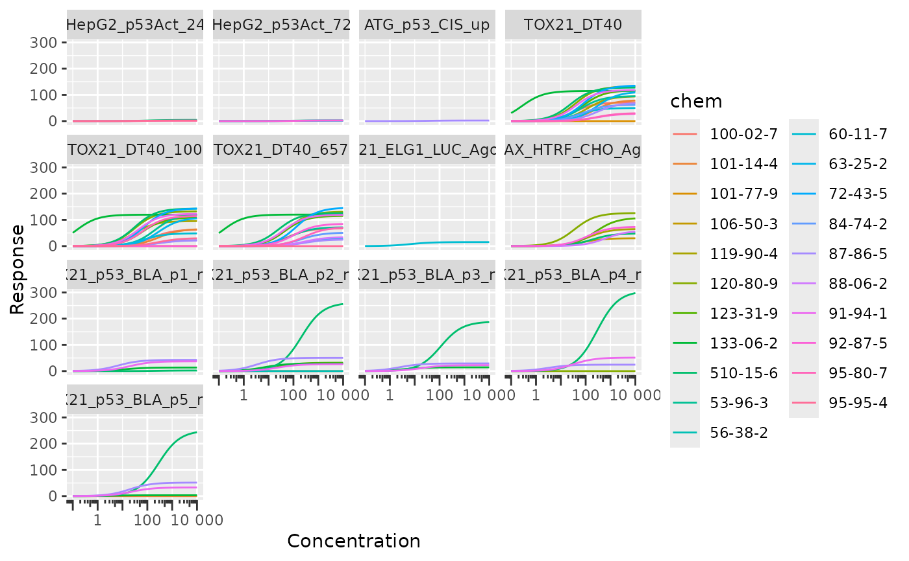
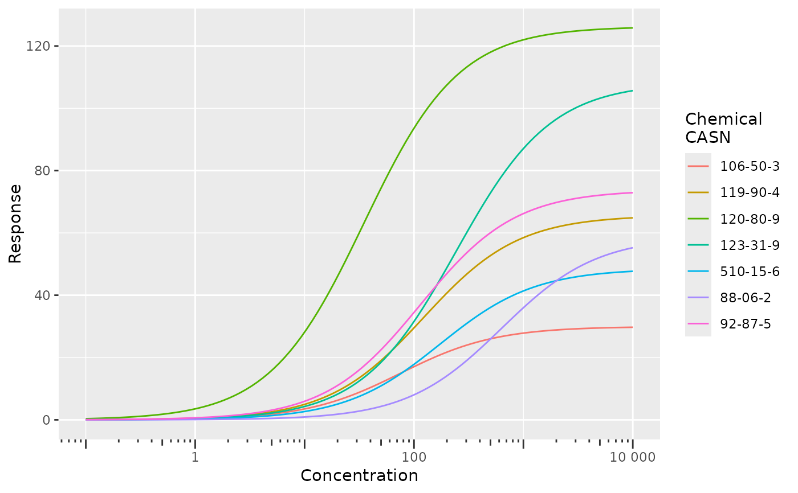
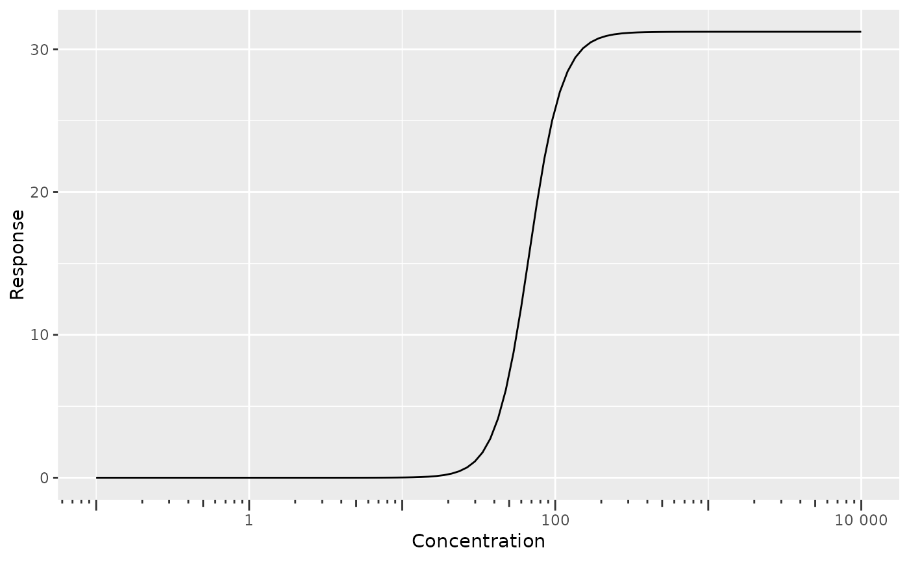

Plot Hill equation fits.
Usage
plot_hill(hill_params, xlim = c(-1, 4))Arguments
- hill_params
output from
fit_hill.- xlim
log-10 scaled concentration limits.
Examples
# Multiple assays, multiple chemicals
df <- geo_tox_data$dose_response
plot_hill(fit_hill(df, assay = "endp", chem = "casn"))

# Single assay, multiple chemicals
df <- geo_tox_data$dose_response |>
dplyr::filter(endp == "TOX21_H2AX_HTRF_CHO_Agonist_ratio")
fig <- plot_hill(fit_hill(df, chem = "casn"))
fig
# Modify plot
fig + ggplot2::guides(color = ggplot2::guide_legend(title = "Chemical\nCASN"))

# Single assay, single chemical
df <- geo_tox_data$dose_response |>
dplyr::filter(endp == "TOX21_H2AX_HTRF_CHO_Agonist_ratio",
casn == "510-15-6")
plot_hill(fit_hill(df))
# 3-parameter Hill model
plot_hill(fit_hill(df, fixed_slope = FALSE))
